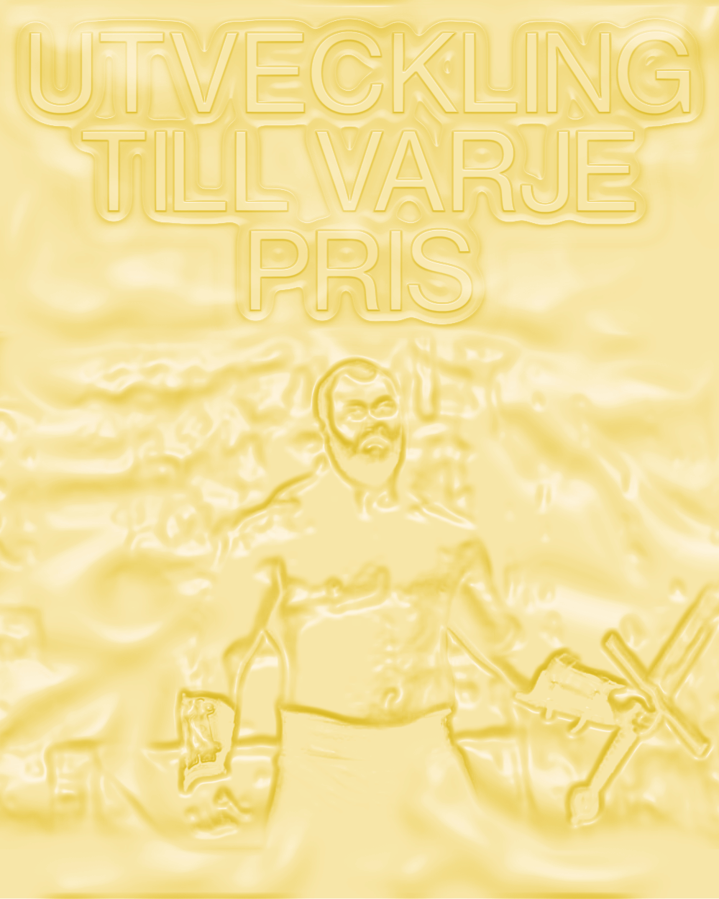
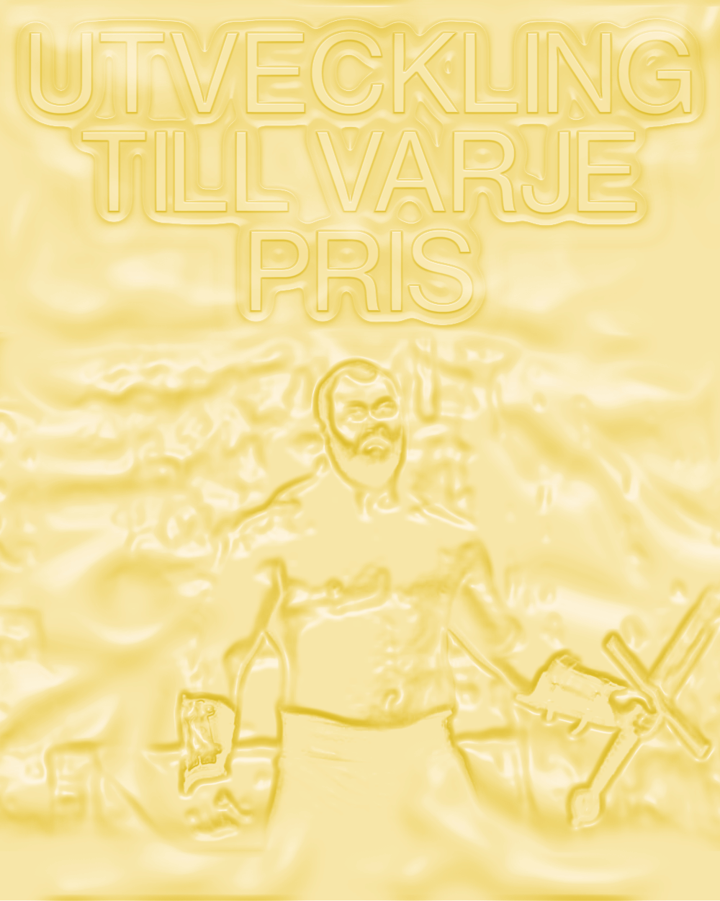
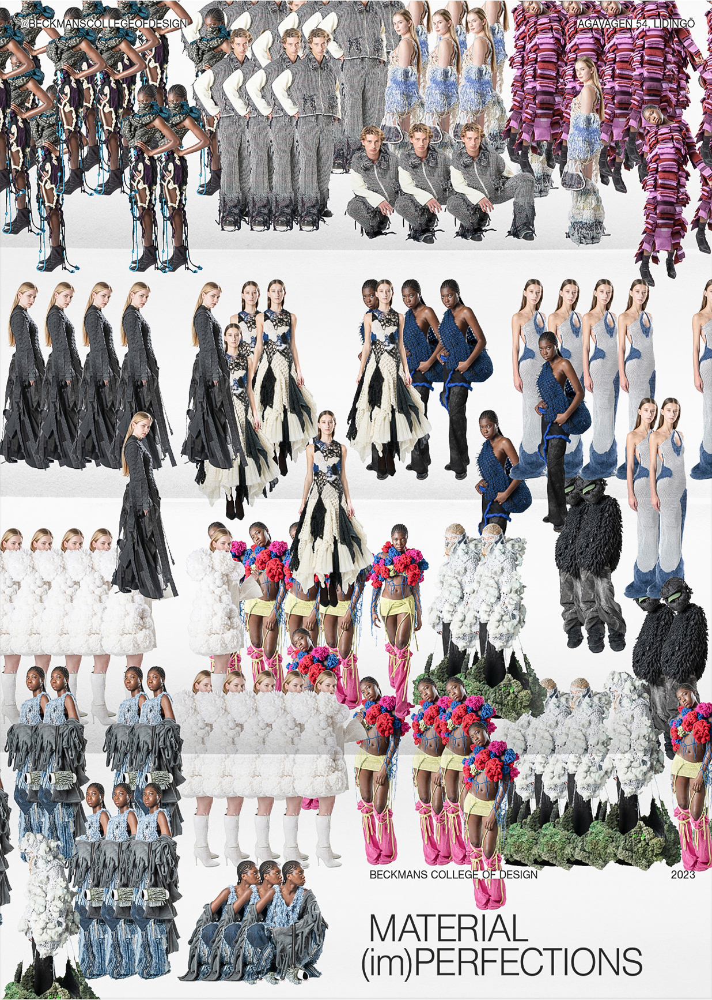
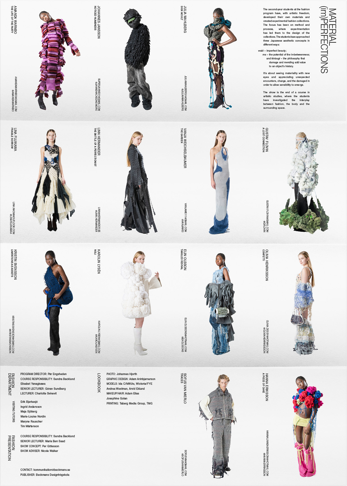
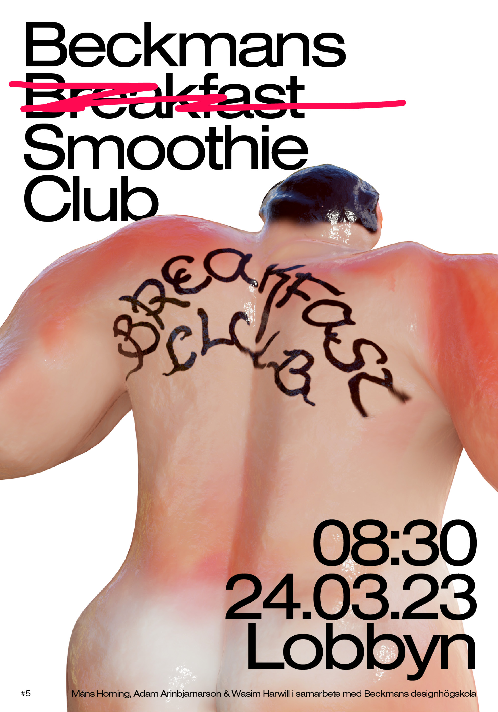
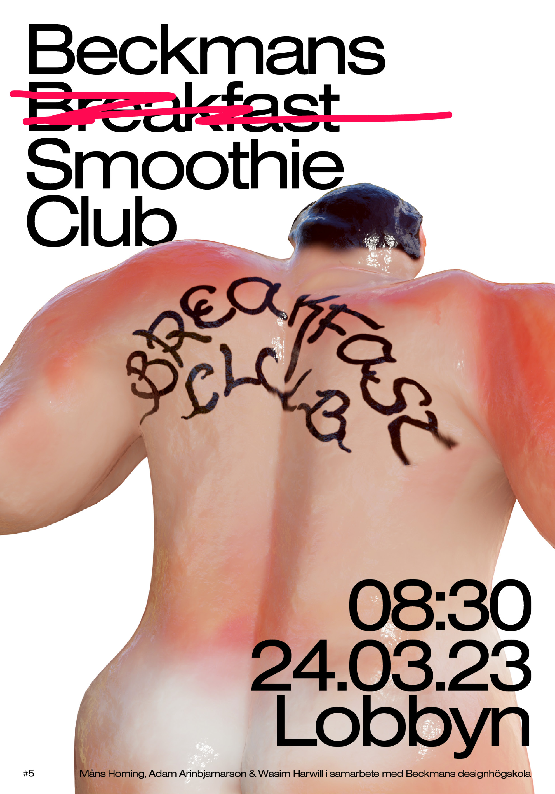

Adam Arinbjarnarson
Graduating 2025
Visual communication, BFA
Beckmans College of Design
Stockholm, Sweden
Compositions, 2024

 


Tyda
Tyda is a graphic identity based on Post-it-notes with LaserJet printed text and images, and a poster exhibited at Vandalorum in Värnamo, Småland.
Idea and excecution in collaboration with Maja Ringsäter and Måns Horning

Tyda is the result of a collaborative project initiated by Sophia Wood and Oscar Guermouche at Beckmans College of Design and Vandalorum Museum för konst och design in Stockholm and Värnamo, respectively. The overarching theme of the collaboration was Folkhemmet, or Swedish identity and our thesis; On every aspect of swedish history, there's an infinite room for interpretation and personal connotations. What is it like to understand Swedish identity, culture and history on these grounds?
Collecting

Collecting is a magazine about collections and algorithms. Single issue, 8 pages á 289 * 380 mm.
Playlists, piracy, algorithms and memories. Collecting is a magazine about collecting and in Volume 1, Music, it's about the ways people collect music. Why we create playlist, how we choose music and the ways Spotify and other digital platforms for music listening have shaped our habits. Inspirations in the project were Every Noise at Once, Simon Evans' Everything I Have and this essay about playlist psychology. Graphic design choices were based on personal computer UI, catalogues and charts. The project's concept and design was made in collaboration with Solvej Jansson and Elvin Odelholm, in the course Editorial Design, led by Stefania Malmsten at Beckmans College of Design.
The first issue of collecting uses 306 individual images collected on the internet or our photo libraries. The images correspond to interviews, statistics or lyrics mentioned in the magazine.
The playlists, tools and texts mentioned in the magazine are presented on the Online Edition of Collecting. The site was made using plain CSS and is .
Opinion
Opinion is a a 60 second video loop with generated sentences and a physics simulation in 3d software. The video was projected on acrylic plastic, as a part of the exhibition Konst Reklam Konst.
The project is about extremism and opinions. I am fascinated by the radical, non-sensical nature of opinions, and the way people seem to reason when forming their opinions. The sentences shown in this project are generated with GPT and After Effects expressions, and are a mix of opinion sounding phrases, adjectives and random nouns. The sentences are projected on the simulation and are constantly changing. They then rotate around the frame of the projection. Opinion is the result of a three week course supervised by Måns Wrange and tutored by Aida Chehrehgosha.
Orionteatern
Orionteatern 1983–2023 is a poster, an invitation and animation for a small scale, independent theatre in Stockholm celebrating their 40th anniversary. Thanks Sophia Wood for supervising this project and Christopher Backholm for making this project happen.

The theatre is run in a building from the 1920's, with bare walls and exposed beams and floor. The creative direction of the theatre makes perfect use of this with experimental, natural material scenography. At one time, they used live horses, water and soil on stage. My choices in making the poster were made to reflect the building's history, ambiance and the theatre's brave set designs. They are not afraid to make a mess. This project was made as part of a group exhibition at Orionteatern. My contribution to the exhibition was adapted for and used as invitation graphics.


Lookbook
Art direction for Material (im)Perfections, a fashion show consisting of experimental looks crafted by students in Fashion at Beckmans College of Design. 500x700mm, 2023
Malmö
A zine guide to Malmö my home town.


Images 2023


 
